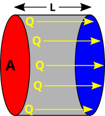

Aula 07 - Processos de Propagação de Calor
Termodinâmica
Objetivos
Ao final desta aula, você deverá ser capaz de:
- Compreender que o calor é energia térmica em trânsito devido a uma diferença de temperatura.
- Diferenciar os três processos de propagação de calor: condução, convecção e radiação.
- Aplicar a lei de Fourier em problemas de condução térmica.
- Relacionar calor sensível, tempo e potência térmica.
- Explicar a lei de Stefan-Boltzmann e sua relação com a emissão de radiação térmica.
- Resolver problemas envolvendo intensidade, potência e área, usando \(I = \dfrac{P}{A}\).
- Reconhecer aplicações desses conceitos em construções, utensílios domésticos, meteorologia, astronomia e tecnologia.
Introdução
Imagine duas situações comuns:
Em um dia frio, você pisa descalço em um piso cerâmico e depois em um tapete. Os dois estão no mesmo ambiente, portanto aproximadamente à mesma temperatura. Mesmo assim, o piso parece muito mais frio. Por quê?
Em uma cozinha, uma colher metálica deixada dentro de uma panela quente rapidamente esquenta até o cabo, enquanto uma colher de madeira demora muito mais. O que muda de um material para outro?
Essas situações mostram que não basta saber a temperatura de um corpo. Também precisamos entender como a energia térmica se transfere de um lugar para outro.

Na chama do fogão, o calor chega à panela principalmente por condução no metal, por convecção nos gases quentes que sobem e por radiação emitida pela chama. A mesma situação cotidiana reúne os três mecanismos que serão estudados nesta aula.
O calor pode se propagar de três formas principais:
- Condução: transferência de energia por contato direto entre partículas.
- Convecção: transferência de energia pelo movimento de massas de fluido.
- Radiação: transferência de energia por ondas eletromagnéticas, sem necessidade de meio material.
Condução Térmica
A condução térmica ocorre principalmente em sólidos. Nesse processo, as partículas de uma região mais quente vibram mais intensamente e transferem parte dessa energia para partículas vizinhas mais frias.
Em metais, além da vibração dos átomos, os elétrons livres também ajudam a transportar energia térmica. Por isso, metais como cobre, alumínio e aço costumam ser bons condutores de calor.

No esquema, a energia térmica flui da extremidade de maior temperatura para a extremidade de menor temperatura. A diferença de temperatura entre as faces é indicada por \(\Delta T\); como se trata de variação, seu valor numérico é o mesmo em kelvin e em grau Celsius.
Aplicações da Condução
A condução térmica aparece em muitas situações:
- Cabos de panelas são feitos de madeira, plástico ou baquelite, materiais maus condutores.
- Panelas metálicas conduzem calor rapidamente da chama para o alimento.
- Isolantes térmicos em paredes e telhados reduzem a passagem de calor entre o interior e o exterior.
- Dissipadores de calor em computadores conduzem energia térmica para longe do processador.
- Roupas de frio prendem ar em seus tecidos, dificultando a condução do calor do corpo para o ambiente.

O dissipador aumenta a área de contato com o ar e é feito de material de alta condutividade térmica. Assim, ele facilita a condução do calor para longe do componente eletrônico e favorece sua remoção pelo ar ao redor.
Lei de Fourier
A lei de Fourier descreve a taxa com que o calor atravessa um material por condução. Em uma parede plana, em regime estacionário, o fluxo de calor é:
\[ \boxed{\phi = \frac{kA\Delta T}{L}} \]
Onde:
- \(\phi\) é o fluxo de calor por condução, em watts (W).
- \(k\) é a condutividade térmica do material, em \(\text{W}/(\text{m}\cdot\text{K})\).
- \(A\) é a área atravessada pelo calor, em \(\text{m}^{2}\).
- \(\Delta T\) é a variação de temperatura termodinâmica entre as faces, em K.
- \(L\) é a espessura do material, em m.
Quanto maior for \(k\), \(A\) ou \(\Delta T\), maior será a transferência de calor. Quanto maior for \(L\), menor será a transferência de calor.
Atenção: Como \(T\) representa temperatura termodinâmica, sua unidade é kelvin. Porém, diferenças de temperatura em kelvin e em grau Celsius têm o mesmo valor numérico. Assim, \(\Delta T = 40\,K\) corresponde a uma variação de \(40\,°C\).
Condutividade Térmica de Alguns Materiais
Valores aproximados:
- Cobre: \(k \approx 400 \, \text{W}/(\text{m}\cdot\text{K})\).
- Alumínio: \(k \approx 205 \, \text{W}/(\text{m}\cdot\text{K})\).
- Aço: \(k \approx 50 \, \text{W}/(\text{m}\cdot\text{K})\).
- Vidro: \(k \approx 0{,}8 \, \text{W}/(\text{m}\cdot\text{K})\).
- Madeira: \(k \approx 0{,}12 \, \text{W}/(\text{m}\cdot\text{K})\).
- Ar parado: \(k \approx 0{,}026 \, \text{W}/(\text{m}\cdot\text{K})\).
Esses valores explicam por que uma panela de cobre aquece rapidamente, enquanto uma parede com camada de ar ou material isolante dificulta a passagem de calor.
Exemplo 7.1 - Calor atravessando uma parede
Uma parede de tijolos tem área de \(12 \,\text{m}^{2}\) e espessura de \(0{,}20 \,\text{m}\). A temperatura interna é \(25\,°C\) e a externa é \(5\,°C\). Considere \(k = 0{,}60 \,\text{W}/(\text{m}\cdot\text{K})\). Qual é o fluxo de calor por condução através da parede?
Resolução:
- \(A = 12 \,\text{m}^{2}\)
- \(L = 0{,}20 \,\text{m}\)
- \(\Delta T = 25 - 5 = 20\,°C\)
- \(k = 0{,}60 \,\text{W}/(\text{m}\cdot\text{K})\)
Aplicando a lei de Fourier:
\[ \phi = \frac{kA\Delta T}{L} \]
\[ \phi = \frac{0{,}60 \cdot 12 \cdot 20}{0{,}20} \]
\[ \phi = 720 \,\text{W} \]
Conclusão: O fluxo de calor por condução através da parede é 720 W, do interior mais quente para o exterior mais frio.
Exemplo 7.2 - Comparação entre metal e madeira
Uma placa metálica e uma placa de madeira têm a mesma área \(A = 0{,}50\,\text{m}^{2}\), a mesma espessura \(L = 0{,}02\,\text{m}\) e estão submetidas à mesma diferença de temperatura \(\Delta T = 30\,°C\). Considere \(k_{\text{metal}} = 50 \,\text{W}/(\text{m}\cdot\text{K})\) e \(k_{\text{madeira}} = 0{,}12 \,\text{W}/(\text{m}\cdot\text{K})\). Determine o fluxo de calor por condução em cada caso.
Resolução:
Para o metal:
\[ \phi_{\text{metal}} = \frac{50 \cdot 0{,}50 \cdot 30}{0{,}02} \]
\[ \phi_{\text{metal}} = 37500 \,\text{W} \]
Para a madeira:
\[ \phi_{\text{madeira}} = \frac{0{,}12 \cdot 0{,}50 \cdot 30}{0{,}02} \]
\[ \phi_{\text{madeira}} = 90 \,\text{W} \]
Conclusão: Nas mesmas condições, o fluxo de calor no metal é muito maior que na madeira. Por isso, ao tocar um metal frio, sentimos perda de calor mais intensa.
Convecção Térmica
A convecção térmica ocorre em fluidos, isto é, em líquidos e gases. Nesse processo, o calor é transportado pelo movimento de porções do próprio fluido.
Quando uma região de um fluido é aquecida, ela geralmente se expande, fica menos densa e tende a subir. A região mais fria, mais densa, tende a descer. Esse movimento cria correntes chamadas correntes de convecção.

As setas indicam a circulação do fluido: a região aquecida fica menos densa e sobe, enquanto a região mais fria desce. Esse transporte de matéria é a característica que diferencia a convecção da condução.
Exemplos e Aplicações da Convecção
- A água ferve porque a parte aquecida no fundo da panela sobe e a parte mais fria desce.
- O ar quente produzido por um aquecedor sobe, aquecendo o ambiente por circulação.
- Geladeiras têm o congelador na parte superior em muitos modelos, pois o ar frio desce.
- Brisas marítimas e terrestres são explicadas por diferenças de aquecimento entre terra e água.
- Correntes atmosféricas influenciam chuvas, ventos e formação de nuvens.
- Chaminés funcionam porque gases quentes sobem e puxam ar novo para a combustão.

Durante o dia, a terra aquece mais rapidamente que o mar. O ar sobre a terra sobe e o ar mais frio vindo do mar ocupa seu lugar, formando a brisa marítima; à noite, o sentido pode se inverter.
Na convecção, diferente da condução, há transporte de matéria. O fluido se desloca e leva energia térmica junto com ele.
Radiação Térmica
A radiação térmica é a transferência de energia por ondas eletromagnéticas. Ela não precisa de contato nem de meio material. Por isso, a energia do Sol chega até a Terra atravessando o vácuo do espaço.
Todos os corpos emitem radiação térmica quando estão a uma temperatura acima de \(0\,K\). Quanto maior a temperatura, maior a energia emitida.

O Sol é o exemplo mais importante de transferência de energia por radiação para a Terra. Como há vácuo entre o Sol e nosso planeta, essa transferência não poderia ocorrer por condução nem por convecção.
Exemplos e Aplicações da Radiação
- Sentimos calor ao nos aproximarmos de uma fogueira mesmo sem tocar o fogo.
- O Sol aquece a superfície da Terra por radiação.
- Garrafas térmicas usam superfícies espelhadas para reduzir perdas por radiação.
- Roupas claras refletem mais radiação solar que roupas escuras.
- Câmeras térmicas detectam radiação infravermelha emitida por corpos.
- Estufas agrícolas retêm parte da radiação térmica emitida pelo solo aquecido.

Na imagem térmica, regiões mais quentes emitem radiação infravermelha mais intensa e aparecem com cores diferentes. Esse princípio é usado em câmeras térmicas, inspeção elétrica, medicina e segurança.
Lei de Stefan-Boltzmann
A lei de Stefan-Boltzmann descreve a potência total irradiada por um corpo devido à sua temperatura:
\[ \boxed{P = e \cdot \sigma \cdot A \cdot T^{4}} \]
Onde:
- \(P\) é a potência irradiada, em watts (W).
- \(e\) é a emissividade da superfície, número entre 0 e 1.
- \(\sigma\) é a constante de Stefan-Boltzmann: \(\sigma = 5{,}67 \times 10^{-8} \,\text{W}/(\text{m}^{2}\cdot\text{K}^{4})\).
- \(A\) é a área da superfície emissora, em \(\text{m}^{2}\).
- \(T\) é a temperatura absoluta, em kelvin (K).
A emissividade indica o quanto uma superfície se aproxima de um corpo escuro ideal. Um corpo escuro ideal tem \(e = 1\) e é o emissor mais eficiente possível. Superfícies escuras e foscas costumam ter emissividade alta, pois absorvem e emitem radiação térmica com eficiência. Superfícies claras, polidas ou metálicas costumam ter emissividade menor, pois refletem mais radiação e emitem menos radiação térmica nas mesmas condições de temperatura e área.
A dependência com \(T^{4}\) é muito importante: pequenas variações de temperatura absoluta podem causar grandes variações na potência irradiada.
Atenção: Na lei de Stefan-Boltzmann, a temperatura deve estar sempre em kelvin. Para converter: \(T(K) = \theta(°C) + 273\).
Quando um corpo está em um ambiente, ele não apenas emite radiação: ele também recebe radiação térmica das paredes, do ar e dos objetos ao redor. Por isso, em muitas situações cotidianas, a grandeza mais importante é a potência líquida:
\[ P_{\text{líquida}} = e \cdot \sigma \cdot A \cdot \left(T_{\text{corpo}}^{4} - T_{\text{ambiente}}^{4}\right) \]
Se o corpo estiver mais quente que o ambiente, \(P_{\text{líquida}}\) representa perda de energia por radiação. Se estiver mais frio, representa ganho líquido de energia por radiação.
Exemplo 7.3 - Potência emitida por Antares

Antares é uma supergigante vermelha na constelação de Escorpião. Considere, de forma aproximada, que Antares tenha raio \(680\) vezes maior que o raio do Sol e temperatura superficial de \(3660\,K\). Estime sua potência emitida e compare com a potência emitida pelo Sol. Use \(R_{\odot} = 6{,}96 \times 10^{8}\,\text{m}\), \(T_{\odot} = 5778\,K\) e considere \(e = 1\) para as duas estrelas.
Resolução:
Para uma estrela, a área emissora é a área da superfície esférica:
\[ A = 4\pi R^{2} \]
Então:
\[ P = \sigma \cdot 4\pi R^{2} \cdot T^{4} \]
Para o Sol:
\[ P_{\odot} = (5{,}67 \times 10^{-8}) \cdot 4\pi \cdot (6{,}96 \times 10^{8})^{2} \cdot (5778)^4 \]
\[ P_{\odot} \approx 3{,}85 \times 10^{26}\,\text{W} \]
Para Antares:
\[ R_{\text{Antares}} = 680R_{\odot} = 680 \cdot 6{,}96 \times 10^{8} \approx 4{,}73 \times 10^{11}\,\text{m} \]
\[ P_{\text{Antares}} = (5{,}67 \times 10^{-8}) \cdot 4\pi \cdot (4{,}73 \times 10^{11})^{2} \cdot (3660)^4 \]
\[ P_{\text{Antares}} \approx 2{,}86 \times 10^{31}\,\text{W} \]
Comparando:
\[ \frac{P_{\text{Antares}}}{P_{\odot}} \approx \frac{2{,}86 \times 10^{31}}{3{,}85 \times 10^{26}} \approx 7{,}4 \times 10^{4} \]
Conclusão: Mesmo tendo temperatura superficial menor que a do Sol, Antares emite cerca de 74 mil vezes mais potência que o Sol, porque sua área superficial é enorme.
Observação: A temperatura superficial de Antares é relativamente baixa para uma estrela: o Sol, por exemplo, tem temperatura superficial de cerca de (5500,°C). Antares é uma supergigante vermelha em estágio avançado de sua evolução. Nessa fase, suas camadas externas se expandiram muito, formando uma superfície imensa. Como a energia emitida pela estrela se distribui por uma área muito maior, a temperatura efetiva da superfície fica menor. Por isso Antares tem coloração avermelhada e é mais fria na superfície que o Sol, embora emita muito mais potência total.
Exemplo 7.4 - Potência líquida irradiada por uma pessoa
Estime a potência líquida perdida por radiação por uma pessoa de altura \(1{,}70\,\text{m}\), com temperatura média da pele de \(34\,°C\), em uma sala a \(25\,°C\). Considere a emissividade da pele aproximadamente \(e = 0{,}97\), área corporal \(A \approx 1{,}8\,\text{m}^{2}\) e \(\sigma = 5{,}67 \times 10^{-8} \,\text{W}/(\text{m}^{2}\cdot\text{K}^{4})\). Compare com uma lâmpada incandescente de \(100\,\text{W}\).
Resolução:
Primeiro, convertemos as temperaturas:
\[ T_{\text{pele}} = 34 + 273 = 307\,K \]
\[ T_{\text{ambiente}} = 25 + 273 = 298\,K \]
Aplicando a expressão da potência líquida:
\[ P_{\text{líquida}} = e \cdot \sigma \cdot A \cdot \left(T_{\text{pele}}^{4} - T_{\text{ambiente}}^{4}\right) \]
\[ P_{\text{líquida}} = 0{,}97 \cdot (5{,}67 \times 10^{-8}) \cdot 1{,}8 \cdot \left(307^4 - 298^4\right) \]
Como:
\[ 307^4 - 298^4 \approx 9{,}93 \times 10^{8} \]
Então:
\[ P_{\text{líquida}} \approx 98\,\text{W} \]
Conclusão: A perda líquida por radiação fica em torno de 100 W, valor comparável à potência de uma lâmpada incandescente de 100 W.
Exemplo 7.5 - Intensidade irradiada por uma superfície
Uma superfície ideal, com emissividade \(e = 1\), está a \(300\,K\). Determine a potência irradiada por metro quadrado, isto é, a intensidade emitida pela superfície.
Resolução:
Como queremos a potência por área:
\[ \frac{P}{A} = e \cdot \sigma \cdot T^{4} \]
\[ I = 1 \cdot (5{,}67 \times 10^{-8}) \cdot (300)^4 \]
Como:
\[ 300^4 = 8{,}1 \times 10^{9} \]
\[ I = 5{,}67 \times 10^{-8} \cdot 8{,}1 \times 10^{9} \]
\[ I \approx 459 \,\text{W}/\text{m}^{2} \]
Conclusão: A superfície emite cerca de 459 W/m².
Intensidade e Potência por Área
A intensidade mede quanta potência atravessa ou é emitida por unidade de área:
\[ \boxed{I = \frac{P}{A}} \]
Onde:
- \(I\) é a intensidade, em \(\text{W}/\text{m}^{2}\).
- \(P\) é a potência, em watts (W).
- \(A\) é a área, em \(\text{m}^{2}\).
Essa fórmula é usada em óptica, radiação térmica, energia solar, acústica e telecomunicações. No contexto desta aula, ela ajuda a comparar quanta energia térmica chega a uma superfície ou é emitida por ela.

Os painéis solares aproveitam a radiação incidente sobre uma área. Por isso, a intensidade \(I = \dfrac{P}{A}\) é uma grandeza central para estimar a potência recebida por cada metro quadrado de painel.
Exemplo 7.6 - Intensidade solar em uma placa
Uma placa solar recebe potência de \(800\,\text{W}\) em uma área de \(2{,}0\,\text{m}^{2}\). Qual é a intensidade média da radiação recebida?
Resolução:
\[ I = \frac{P}{A} \]
\[ I = \frac{800}{2{,}0} = 400 \,\text{W}/\text{m}^{2} \]
Conclusão: A intensidade média recebida pela placa é 400 W/m².
Exemplo 7.7 - Potência recebida por uma janela
Uma janela de área \(1{,}5\,\text{m}^{2}\) recebe radiação solar com intensidade média de \(600\,\text{W}/\text{m}^{2}\). Qual potência chega à janela?
Resolução:
Da fórmula:
\[ I = \frac{P}{A} \]
Isolando \(P\):
\[ P = I \cdot A \]
\[ P = 600 \cdot 1{,}5 = 900\,\text{W} \]
Conclusão: A potência recebida pela janela é 900 W.
Mais Exemplos Integrados
Exemplo 7.8 - Lei de Fourier com calor sensível
Uma chapa metálica conduz calor com potência constante de \(500\,\text{W}\) para aquecer \(2{,}0\,\text{kg}\) de água. Considere que toda essa energia seja absorvida pela água, com calor específico \(c = 4200\,\text{J}/(\text{kg}\cdot°C)\). Quanto tempo é necessário para aquecer a água de \(20\,°C\) para \(50\,°C\)?
Resolução:
Primeiro, calculamos o calor sensível:
\[ Q = m \cdot c \cdot \Delta \theta \]
\[ Q = 2{,}0 \cdot 4200 \cdot (50 - 20) \]
\[ Q = 2{,}0 \cdot 4200 \cdot 30 = 252000\,\text{J} \]
Como:
\[ P = \frac{Q}{\Delta t} \]
Então:
\[ \Delta t = \frac{Q}{P} = \frac{252000}{500} = 504\,\text{s} \]
Conclusão: O aquecimento leva 504 s, ou aproximadamente 8,4 min.
Exemplo 7.9 - Potência térmica por condução
Uma janela de vidro de área \(1{,}2\,\text{m}^{2}\) e espessura \(0{,}004\,\text{m}\) separa um ambiente a \(22\,°C\) do exterior a \(2\,°C\). Considere \(k_{\text{vidro}} = 0{,}8\,\text{W}/(\text{m}\cdot\text{K})\). Determine a potência térmica perdida por condução.
Resolução:
\[ \phi = \frac{kA\Delta T}{L} \]
\[ \phi = \frac{0{,}8 \cdot 1{,}2 \cdot 20}{0{,}004} \]
\[ \phi = 4800\,\text{W} \]
Conclusão: A janela perde calor por condução com potência de 4800 W, mostrando por que vidros simples são pouco eficientes como isolamento térmico.
Exemplo 7.10 - Lei de Stefan-Boltzmann com intensidade
Uma superfície escura de emissividade \(e = 0{,}90\) está a \(400\,K\). Determine a intensidade da radiação emitida.
Resolução:
Pela lei de Stefan-Boltzmann:
\[ P = e \cdot \sigma \cdot A \cdot T^{4} \]
Dividindo por \(A\):
\[ I = \frac{P}{A} = e \cdot \sigma \cdot T^{4} \]
\[ I = 0{,}90 \cdot (5{,}67 \times 10^{-8}) \cdot (400)^4 \]
Como:
\[ 400^4 = 2{,}56 \times 10^{10} \]
\[ I = 0{,}90 \cdot 5{,}67 \times 10^{-8} \cdot 2{,}56 \times 10^{10} \]
\[ I \approx 1306\,\text{W}/\text{m}^{2} \]
Conclusão: A superfície emite radiação com intensidade aproximada de 1306 W/m².
Resumo das Fórmulas
- Calor sensível: \[Q = m \cdot c \cdot \Delta \theta\]
- Potência térmica: \[P = \frac{Q}{\Delta t}\]
- Lei de Fourier: \[\phi = \frac{kA\Delta T}{L}\]
- Lei de Stefan-Boltzmann: \[P = e \cdot \sigma \cdot A \cdot T^{4}\]
- Intensidade: \[I = \frac{P}{A}\]
- Stefan-Boltzmann em forma de intensidade: \[I = e \cdot \sigma \cdot T^{4}\]
Conclusão
Nesta aula, estudamos como o calor se propaga por condução, convecção e radiação.
Na condução, o calor passa por contato microscópico entre partículas, sendo especialmente eficiente em metais. A lei de Fourier permite calcular o fluxo de calor transferido por uma parede, barra, placa ou janela.
Na convecção, o calor é transportado pelo movimento de fluidos. Esse processo explica a circulação da água em uma panela, o funcionamento de geladeiras, chaminés, aquecedores e fenômenos atmosféricos como as brisas.
Na radiação, o calor é transferido por ondas eletromagnéticas, sem necessidade de meio material. A lei de Stefan-Boltzmann mostra que a potência irradiada depende fortemente da temperatura absoluta, elevada à quarta potência.
Compreender esses processos é essencial para interpretar fenômenos do cotidiano e projetar sistemas mais eficientes: casas com melhor isolamento, equipamentos eletrônicos com melhor dissipação, coletores solares, estufas, garrafas térmicas e sistemas de aquecimento ou refrigeração.
Exercícios de Fixação
- 7.1)
- Qual alternativa descreve corretamente a condução térmica?
- Transferência de calor por ondas eletromagnéticas, sem necessidade de meio material.
- Transferência de calor pelo movimento de massas de líquidos ou gases.
- Transferência de calor por contato entre partículas, sem transporte macroscópico de matéria.
- Transferência de calor que ocorre somente no vácuo.
- Transferência de calor que depende apenas da cor do corpo.
- 7.2)
- Por que a convecção ocorre em líquidos e gases, mas não é o principal processo em sólidos?
- Porque sólidos não possuem temperatura.
- Porque líquidos e gases podem escoar, transportando energia junto com o movimento do fluido.
- Porque sólidos sempre impedem qualquer passagem de calor.
- Porque a convecção só ocorre quando há radiação solar.
- Porque líquidos e gases não sofrem dilatação térmica.
- 7.3)
- Qual afirmação sobre radiação térmica está correta?
- A radiação térmica só ocorre se houver ar entre os corpos.
- A radiação térmica é o processo que explica a chegada da energia solar à Terra.
- A radiação térmica só ocorre em metais.
- A radiação térmica exige contato direto entre fonte e receptor.
- A radiação térmica não depende da temperatura do corpo.
- 7.4)
- Uma parede de área \(10\,\text{m}^{2}\), espessura \(0{,}25\,\text{m}\) e condutividade térmica \(k = 0{,}50\,\text{W}/(\text{m}\cdot\text{K})\) separa dois ambientes com diferença de temperatura de \(20\,°C\). Qual é a potência térmica conduzida?
- 200 W.
- 300 W.
- 400 W.
- 500 W.
- 800 W.
- 7.5)
- Uma placa de vidro tem área \(2{,}0\,\text{m}^{2}\), espessura \(0{,}005\,\text{m}\) e \(k = 0{,}8\,\text{W}/(\text{m}\cdot\text{K})\). Se a diferença de temperatura entre suas faces é \(15\,°C\), qual é a potência conduzida?
- 1200 W.
- 2400 W.
- 3600 W.
- 4800 W.
- 6000 W.
- 7.6)
- Durante um teste de isolamento térmico, uma placa plana de área \(0{,}80\,\text{m}^{2}\) e espessura \(0{,}040\,\text{m}\) separa duas regiões com diferença de temperatura de \(30\,°C\). O fluxo de calor de condução medido através da placa é \(120\,\text{W}\). Qual é o valor da condutividade térmica \(k\) do material?
- \(0{,}10\,\text{W}/(\text{m}\cdot\text{K})\).
- \(0{,}20\,\text{W}/(\text{m}\cdot\text{K})\).
- \(0{,}40\,\text{W}/(\text{m}\cdot\text{K})\).
- \(0{,}80\,\text{W}/(\text{m}\cdot\text{K})\).
- \(1{,}20\,\text{W}/(\text{m}\cdot\text{K})\).
- 7.7)
- Uma superfície escura ideal de área \(1{,}0\,\text{m}^{2}\) está a \(300\,K\). Usando \(\sigma = 5{,}67 \times 10^{-8}\,\text{W}/(\text{m}^{2}\cdot\text{K}^{4})\), qual potência ela irradia aproximadamente?
- 129 W.
- 259 W.
- 459 W.
- 659 W.
- 859 W.
- 7.8)
- Uma placa de área \(0{,}50\,\text{m}^{2}\), emissividade \(e=0{,}80\), está a \(500\,K\). Determine a potência irradiada. Use \(\sigma = 5{,}67 \times 10^{-8}\,\text{W}/(\text{m}^{2}\cdot\text{K}^{4})\).
- 708,75 W.
- 1134 W.
- 1417,5 W.
- 2268 W.
- 2835 W.
- 7.9)
- Uma radiação de intensidade \(750\,\text{W}/\text{m}^{2}\) incide sobre uma placa de área \(1{,}6\,\text{m}^{2}\). Qual potência chega à placa?
- 750 W.
- 960 W.
- 1200 W.
- 1500 W.
- 1875 W.
- 7.10)
- Uma superfície emite potência de \(1800\,\text{W}\) distribuída uniformemente por uma área de \(3{,}0\,\text{m}^{2}\). Qual é a intensidade emitida?
- 300 \(\text{W}/\text{m}^{2}\).
- 450 \(\text{W}/\text{m}^{2}\).
- 600 \(\text{W}/\text{m}^{2}\).
- 900 \(\text{W}/\text{m}^{2}\).
- 1800 \(\text{W}/\text{m}^{2}\).
Recomendações

{kind=link}
Referências
- BONJORNO, José Roberto; RAMOS, Clinton; BONJORNO, Regina de Fátima Souza. Física: termologia, óptica e ondas. 3. ed. São Paulo: FTD, 2016.
- GASPAR, Alberto. Física: volume único. 2. ed. São Paulo: Ática, 2014.
- HALLIDAY, David; RESNICK, Robert; WALKER, Jearl. Fundamentos de Física: gravitação, ondas e termodinâmica. 10. ed. Rio de Janeiro: LTC, 2016.
- HEWITT, Paul G. Física Conceitual. 12. ed. Porto Alegre: Bookman, 2015.
- KHAN ACADEMY. Thermal conduction, convection, and radiation. Disponível em: https://www.khanacademy.org/science/physics/thermodynamics. Acesso em: 26 maio 2026.
- OPENSTAX. College Physics 2e: Heat Transfer Methods. Disponível em: https://openstax.org/books/college-physics-2e/pages/14-6-heat-transfer-methods. Acesso em: 26 maio 2026.